09-docker综合应用
1.容器资源限制
官网文档
https://docs.docker.com/config/containers/resource_constraints/
2.docker内存限制
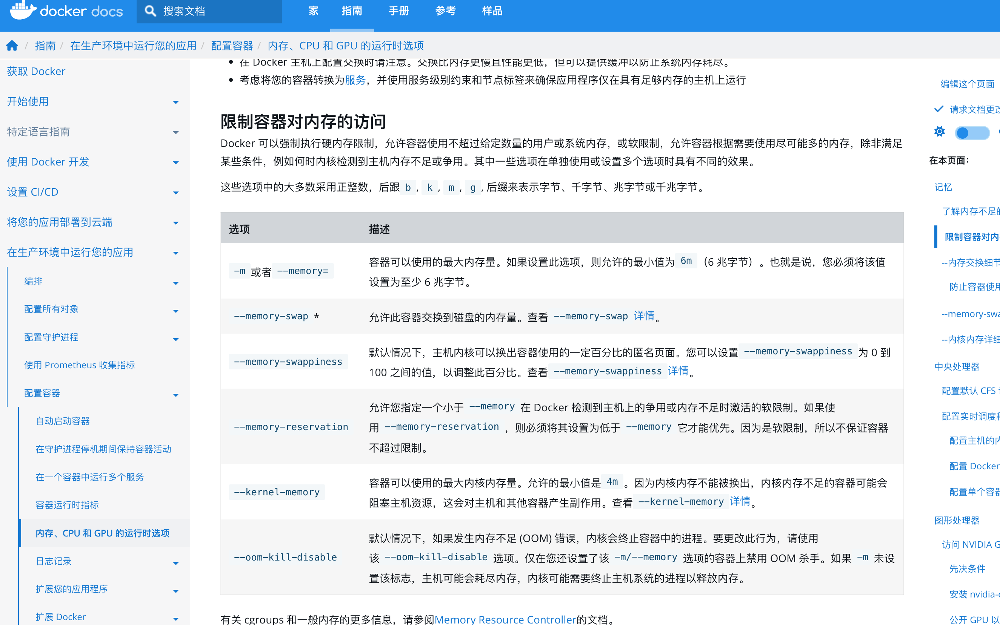
-m或者--memory= 容器可以使用的最大内存量。如果设置此选项，则允许的最小值为6m（6 兆字节）。也就是说，您必须将该值设置为至少 6 兆字节。
--oom-kill-disable 默认情况下，如果发生内存不足 (OOM) 错误，内核会终止容器中的进程。要更改此行为，请使用该--oom-kill-disable选项。仅在您还设置了该-m/--memory选项的容器上禁用 OOM 杀手。如果-m未设置该标志，主机可能会耗尽内存，内核可能需要终止主机系统的进程以释放内存。
下载性能压测工具
1.安装
docker pull lorel/docker-stress-ng
2.查看压测工具帮助信息
[root@docker-200 ~]#docker run --name mem_test -it --rm lorel/docker-stress-ng |grep 'mem'
--cache-flush flush cache after every memory write (x86 only)
--memcpy N start N workers performing memory copies
--memcpy-ops N stop when N memcpy bogo operations completed
--vm-hang N sleep N seconds before freeing memory
--vm-keep redirty memory instead of reallocating
--vm-locked lock the pages of the mapped region into memory
3.创建一个没有资源限制的容器任务
[root@docker-200 ~]#
[root@docker-200 ~]#docker run --name mem_test -it lorel/docker-stress-ng |grep 'vm'
-m N, --vm N start N workers spinning on anonymous mmap
--vm-bytes N allocate N bytes per vm worker (default 256MB)
--vm-hang N sleep N seconds before freeing memory
--vm-keep redirty memory instead of reallocating
--vm-ops N stop when N vm bogo operations completed
--vm-locked lock the pages of the mapped region into memory
--vm-method m specify stress vm method m, default is all
--vm-populate populate (prefault) page tables for a mapping
Example: stress-ng --cpu 8 --io 4 --vm 2 --vm-bytes 128M --fork 4 --timeout 10s
内存压测结果
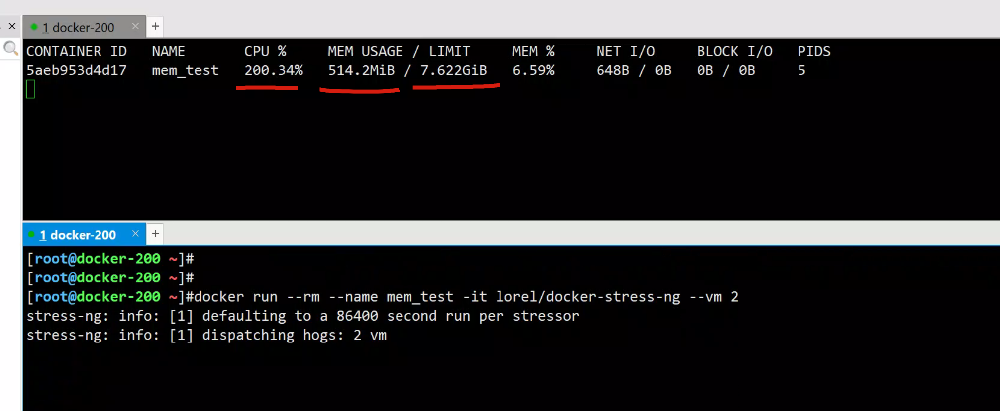
创建容器且限制内存
[root@docker-200 ~]#docker run --rm --name mem_test_www.yuchaoit.cn -m 200m -it lorel/docker-stress-ng --vm 2
stress-ng: info: [1] defaulting to a 86400 second run per stressor
stress-ng: info: [1] dispatching hogs: 2 vm
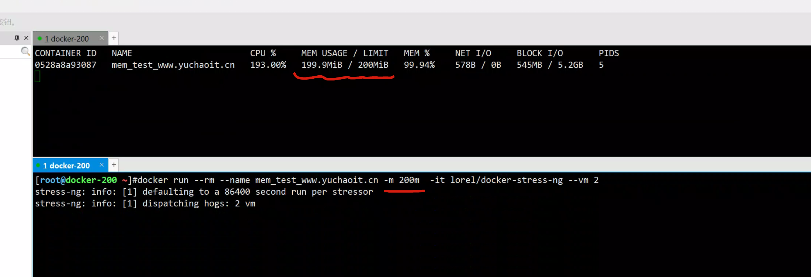
3.容器CPU限制
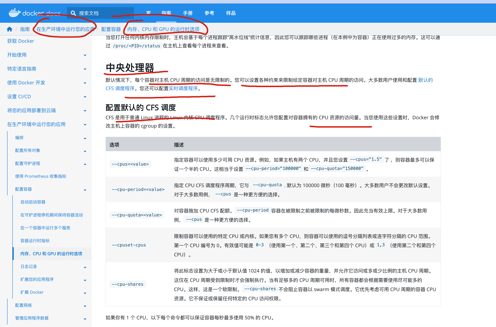
https://docs.docker.com/config/containers/resource_constraints/#cpu
--cpus=<value> 指定容器可以使用多少可用 CPU 资源。例如，如果主机有两个 CPU，并且您设置--cpus="1.5"了 ，则容器最多可以保证一个半的 CPU。这相当于设置--cpu-period="100000"和--cpu-quota="150000"。
限制CPU实践
1.看宿主机CPU数量
[root@docker-200 ~]#lscpu |grep cpu -i
CPU op-mode(s): 32-bit, 64-bit
CPU(s): 4
On-line CPU(s) list: 0-3
CPU family: 6
CPU MHz: 2112.001
NUMA node0 CPU(s): 0-3
[root@docker-200 ~]#
2.压测命令
指定使用4个CPU，注意这是该工具提供的 --cpu参数，和容器无关
[root@docker-200 ~]#docker run --name cpu_test_www.yuchoait.cn --rm lorel/docker-stress-ng --cpu 4
stress-ng: info: [1] defaulting to a 86400 second run per stressor
stress-ng: info: [1] dispatching hogs: 4 cpu
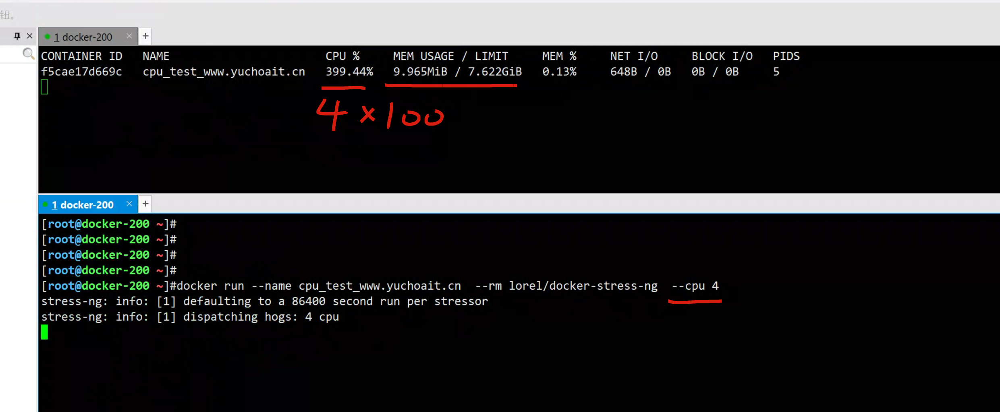
工具指定用2个CPU压测
[root@docker-200 ~]#docker run --name cpu_test_www.yuchoait.cn --rm lorel/docker-stress-ng --cpu 2
stress-ng: info: [1] defaulting to a 86400 second run per stressor
stress-ng: info: [1] dispatching hogs: 2 cpu
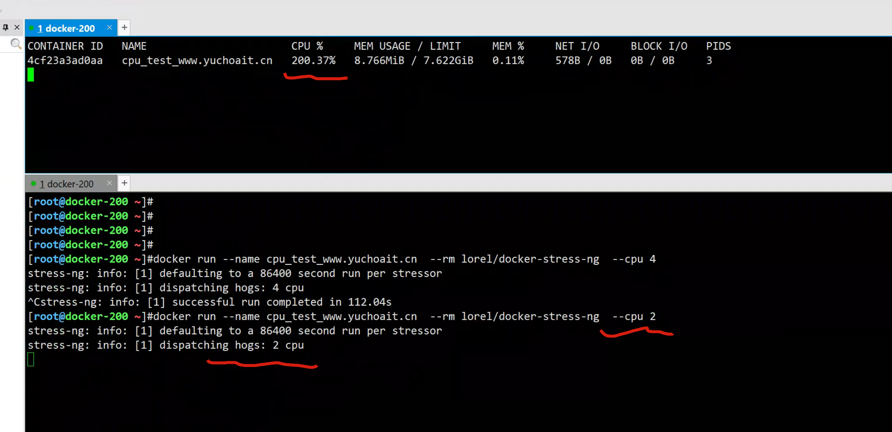
top查看容器进程状态
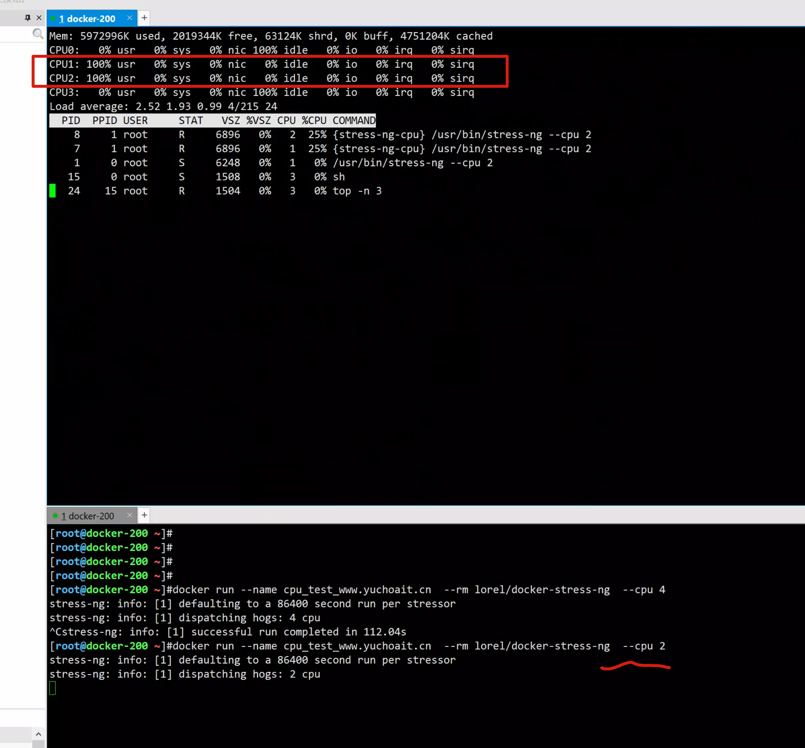
docker提供的CPU使用限制
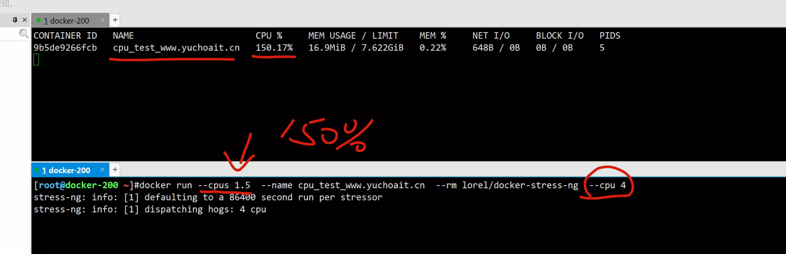
top查看限制
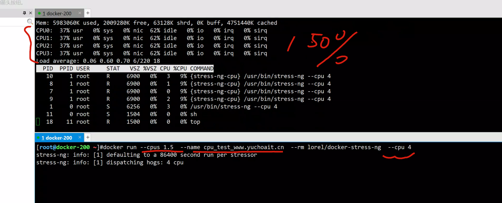
4.docker资源监控
注意ntp时间问题，时序数据库很关注这个。
4.1 docker自带监控
docker ps # 运行着的容器进程列表
docker top container_id # 查看容器内进程
docker stats container_id # 查看容器内cpu，mem，io情况
通过 docker stats 命令可以很方便的看到当前宿主机上所有容器的CPU，内存，以及网络流量等数据。
但 docker stats 命令的缺点是只是统计当前宿主机的所有容器，获取的数据是实时的，没有地方存储，也没有报警功能。
4.2 cADvisor、prometheus、grafana容器监控方案
1.CAdvisor出自Google，优点是开源产品，监控指标齐全，部署方便，而且有官方的docker镜像，采集容器的CPU，内存，网络，文件系统等信息
2. cAdvisor主要用于采集数据，并且导出数据交给其他展示软件即可。
3.可以用CAdviror结合很多其他工具实现容器资源监控+展示；
Prometheus是主流方案之一。
4.是什么
CAdvisor
CAdvisor是一个容器资源监控工具，包括容器的内存，CPU，网络IO，磁盘IO等，同时提供了一个WEB页面用于查看容器的实时运行状态。CAdvisor默认存储2分钟的数据，而且只是针对单物理机，不过，CAdvisor提供了很多数据集成接口，支持InfluxDB，Redis，Kafka，Elasticsearch等集成，可以加上对应配置将监控数据发往这些数据库存储起来。
CAdvisor功能主要有两点，展示Host，容器两个层次的监控数据和展示历史变化
4.3 prometheus是什么
官网：https://prometheus.io
github地址：https://github.com/prometheus
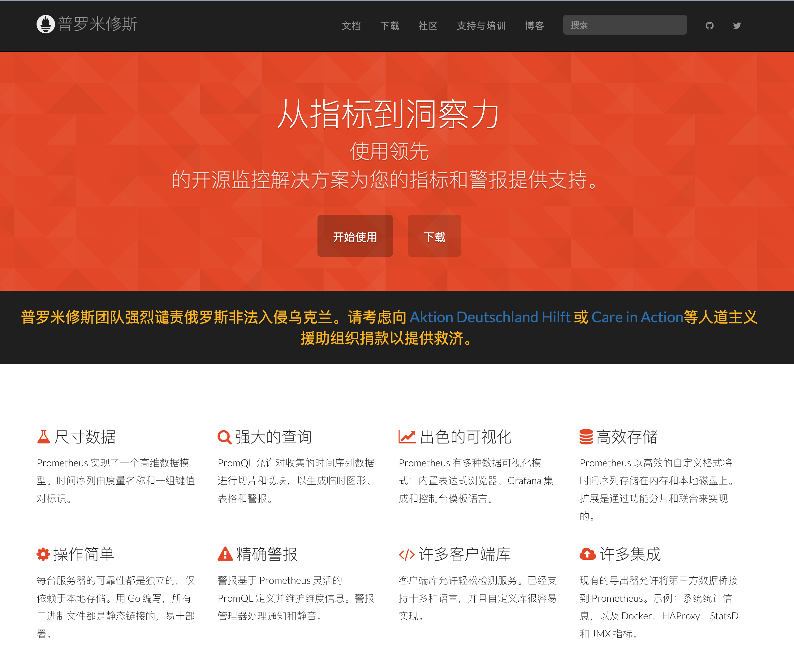
普罗米修斯
2、Prometheus 特点
• 多维数据模型：由度量名称和键值对标识的时间序列数据
• PromSQL：一种灵活的查询语言，可以利用多维数据完成复杂的查询
• 不依赖分布式存储，单个服务器节点可直接工作
• 基于HTTP的pull方式采集时间序列数据
• 推送时间序列数据通过PushGateway组件支持
• 通过服务发现或静态配置发现目标
• 多种图形模式及仪表盘支持（grafana）
主要组件是
node exporter：用于采集主机硬件，系统，应用等运行数据，以容器的形式运行在目标主机上。
cAdvisor，负责采集容器数据，以容器的形式运行在所有目标机器上。
什么是node_exporter
Node Exporter 是 Prometheus 官方提供的一个节点资源采集组件，可以用于收集服务器节点的数据，如 CPU频率信息、磁盘IO统计、剩余可用内存 等等。
Node Exporter 会将收集到的信息转换为 Prometheus 可识别的 Metrics 数据。
Prometheus 可以从 Node Exporter 中对这些指标进行收集与存储，并且可以根据这些数据的实时变化进行服务器节点资源监控。
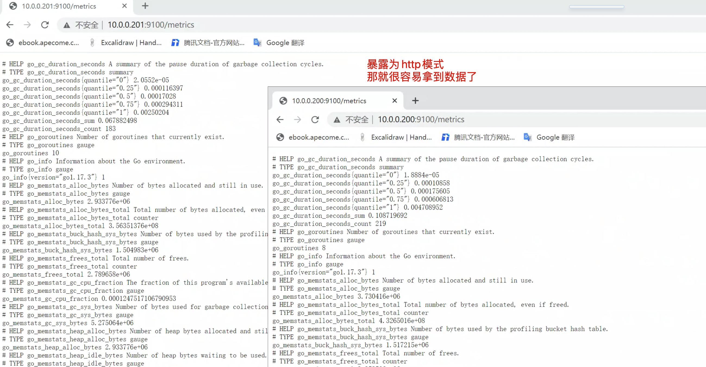
普罗米修斯工作原理流程
Prometheus的基本原理是通过HTTP协议周期性抓取被监控组件的状态，任意组件只要提供对应的HTTP接口就可以接入监控。
不需要任何SDK或者其他的集成过程。
这样做非常适合做虚拟化环境监控系统，比如VM、Docker、Kubernetes等。输出被监控组件信息的HTTP接口被叫做exporter 。
目前互联网公司常用的组件大部分都有exporter可以直接使用，比如Varnish、Haproxy、Nginx、MySQL、Linux系统信息(包括磁盘、内存、CPU、网络等等)。
grafana
Grafana 是一个分析平台，可用于查询和可视化数据，然后根据可视化结果创建和共享仪表板。
4.4 实践部署
10.0.0.200 部署cAdvisor + node exporter + prometheus + grafana
10.0.0.201 部署 cAdvisor + node exporter
docker-200机器
编写普罗米修斯配置文件
cat > prometheus.yml <<'EOF'
scrape_configs:
- job_name: cadvisor
scrape_interval: 5s
static_configs:
- targets:
- 10.0.0.200:8080
- 10.0.0.201:8080
- job_name: prometheus
scrape_interval: 5s
static_configs:
- targets:
- 10.0.0.200:9090
- job_name: node_exporter
scrape_interval: 5s
static_configs:
- targets:
- 10.0.0.200:9100
- 10.0.0.201:9100
EOF
docker-compose配置文件
cat > docker-compose.yml << 'EOF'
version: '3.2'
services:
prometheus:
image: prom/prometheus:latest
container_name: prometheus
ports:
- 9090:9090
command:
- --config.file=/etc/prometheus/prometheus.yml
volumes:
- ./prometheus.yml:/etc/prometheus/prometheus.yml:ro
depends_on:
- cadvisor
node-exporter:
image: prom/node-exporter:latest
container_name: node_exporter
ports:
- 9100:9100
cadvisor:
image: google/cadvisor:latest
container_name: cadvisor
ports:
- 8080:8080
volumes:
- /:/rootfs:ro
- /var/run:/var/run:rw
- /sys:/sys:ro
- /var/lib/docker/:/var/lib/docker:ro
grafana:
image: grafana/grafana:latest
container_name: grafana
ports:
- 3000:3000
EOF
文件列表
[root@docker-200 /www.yuchaoit.cn/compose_prometheus]#ll
total 8
-rw-r--r-- 1 root root 736 Aug 31 02:58 docker-compose.yml
-rw-r--r-- 1 root root 389 Aug 31 02:44 prometheus.yml
安装
docker-compose -f docker-compose.yml up -d
访问cAdvisor
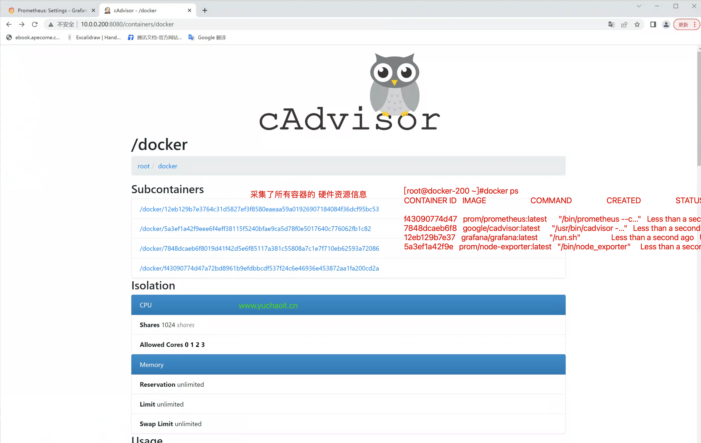
可以传递给prometheus的指标
http://10.0.0.200:8080/metrics
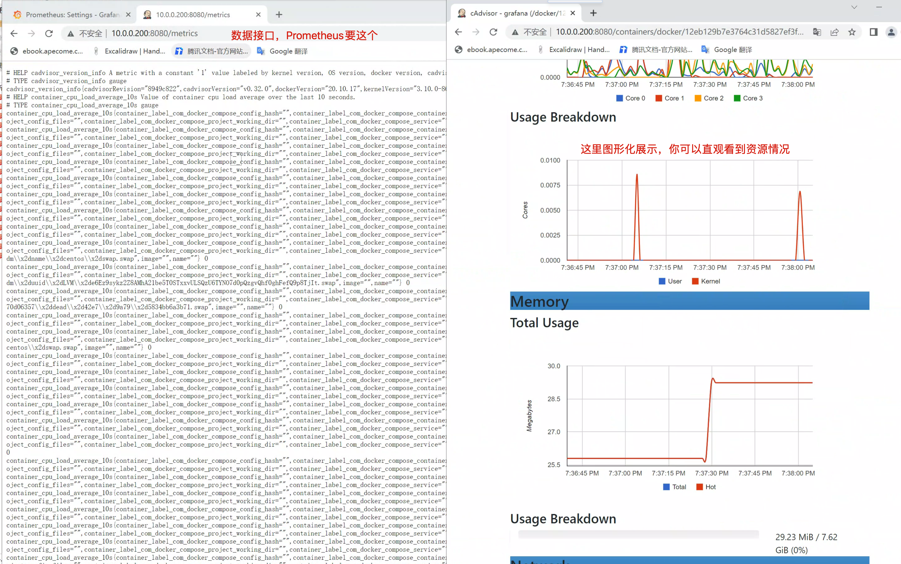
访问node_exporters节点采集
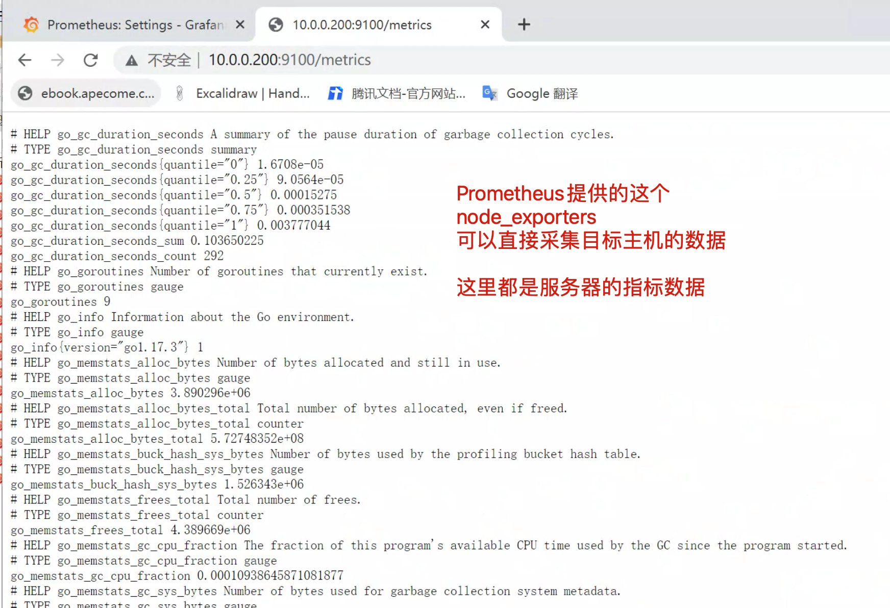
docker-201配置
docker-compose配置
cat > docker-compose.yml << 'EOF'
version: '3.2'
services:
node-exporter:
image: prom/node-exporter:latest
container_name: node_exporter
ports:
- 9100:9100
cadvisor:
image: google/cadvisor:latest
container_name: cadvisor
ports:
- 8080:8080
volumes:
- /:/rootfs:ro
- /var/run:/var/run:rw
- /sys:/sys:ro
- /var/lib/docker/:/var/lib/docker:ro
EOF
安装
yum install docker-compose -y
docker-compose -f docker-compose.yml up -d
4.5 访问grafana
10.0.0.200:3000
默认admin
admin
新密码
www.yuchaoit.cn
数据采集架构
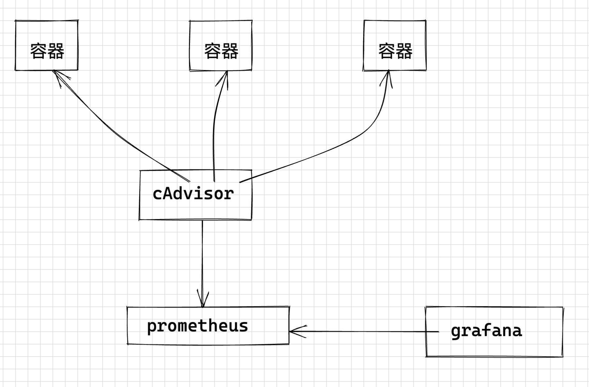
添加数据源
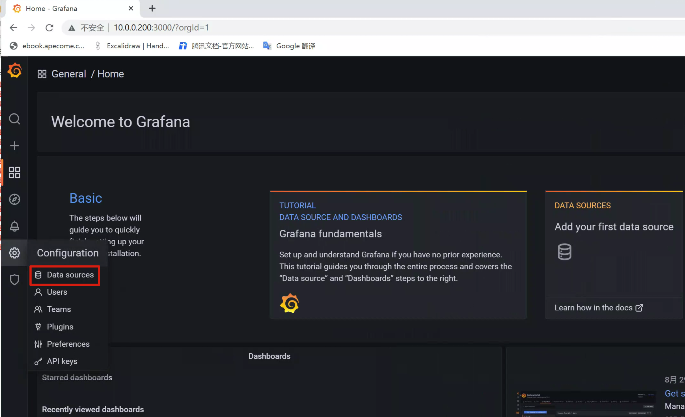
添加普罗米修斯
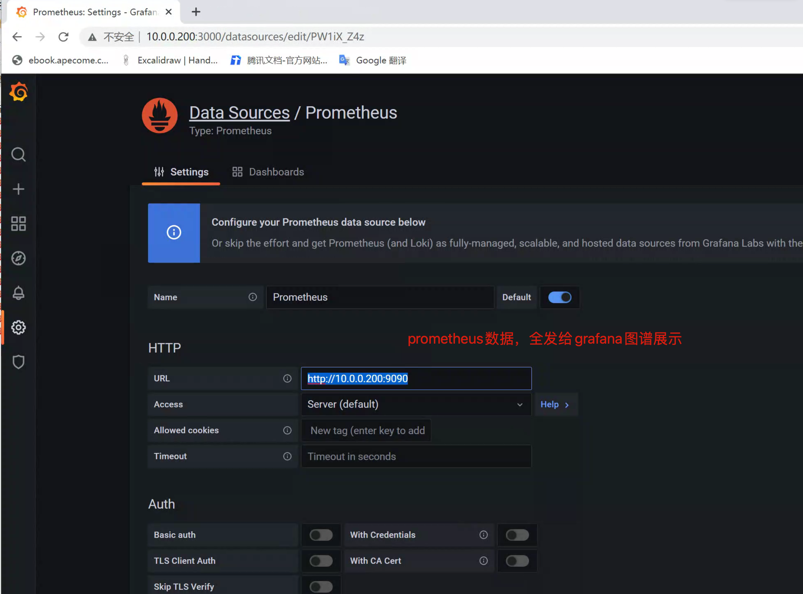
打开数据展示仪表盘
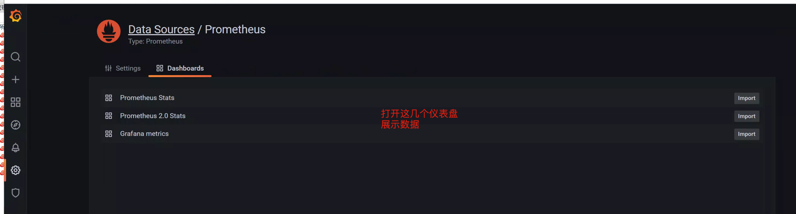
使用如下模板
https://grafana.com/grafana/dashboards/8919-1-node-exporter-for-prometheus-dashboard-cn-0413-consulmanager/
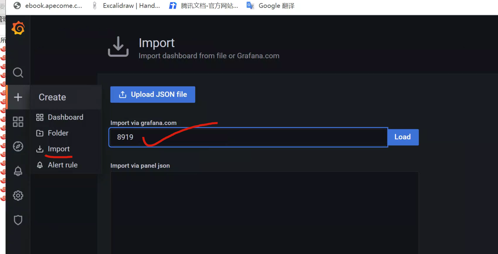
展示主机数据监控情况)
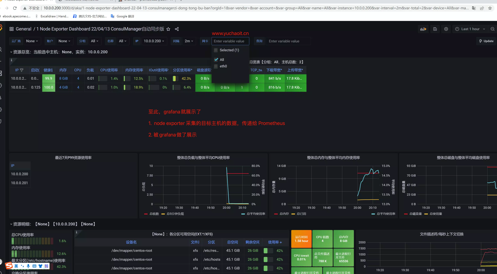
继续添加采集容器的数据
cAdvisor采集到容器的数据，已经交给Prometheus了
只需要通过一个模板展示即可
https://grafana.com/grafana/dashboards/11600-docker-container/
再跑一个容器，压测试试，查看监控情况
[root@docker-201 ~]#docker run --name www.yuchaoit.cn -d -p 81:80 nginx
ef9e26cec58a7c2f0d97db75a894d22836b7099748028c1eaeeff73e5e9e9515
[root@docker-201 ~]#
[root@docker-201 ~]#
[root@docker-201 ~]#
[root@docker-201 ~]#ab -c 100 -n 1000000 http://10.0.0.201:81/
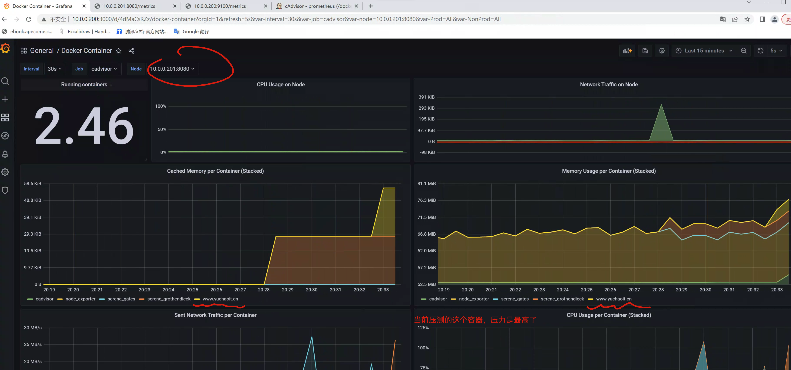
至此，就完成了基于Prometheus + grafana完成了对 linux服务器，以及docker容器的数据采集+展示。
更多普罗米修斯的玩法，还得继续学习，这是一块非常大的知识点。
学习如普罗米修斯查询语句等。
任重而道远呀！！